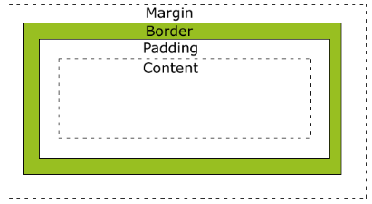
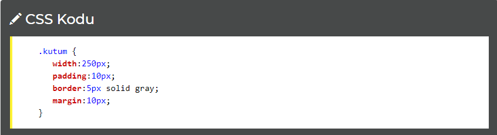
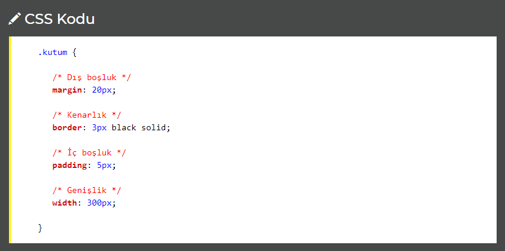
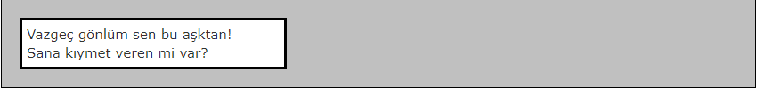
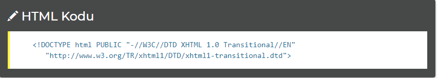

CSS Kutu Modeli
Bir HTML nesnesi kutu gibi davranabilir. İşte bu kutu şekilli tasarım modeline CSS Kutu Modeli diyoruz.
Kutu modelinde size tanıtacağımız dört özellik var:
Margin - Kenarlığın çevresinde verilen boşluk.
Border - Kenarlık
Padding - Kenarlık ile içerik arasındaki boşluk. Arkaplan rengine boyanır.
Content (İçerik)

Yukarıda CONTENT içeriğin bulunduğu kısımdır. İçerik ile kenarlık arasında verdiğimiz boşluk padding kenarlıktan sonra vereceğimiz boşluk ise margin olarak adlandırılır.
Bir Elementin Genişlik ve Yüksekliği
İçerik alanının genişliği width ve yüksekliği height özelliği ile ayarlanır.

Yukarıdaki örnekte genişlik (width) 250 piksel olarak ayarlanmıştır. Peki HTML dosyamızda da bu elementin kaplayacağı alan 250 piksel mi olacaktır? Tabiki HAYIR!
Şimdi hesaplayalım:
250 piksel = Genişlik
20 piksel = Sağdan ve Soldan İç Boşluk (padding 10x2)
10 piksel = Sağ ve Sol Kenarlıklar (border 5x2)
20 piksel = Sağ ve Sol Dış Boşluk (margin 10x2)
300 piksel = Toplam Genişlik
Kısacası kodlama yaparken genişliği iyi hesap etmek için boşluk, kenarlık ve içerik genişliği toplanarak hesaplanmalıdır.
Yüksekliği hesap ederken width değeri yerine height değeri ve boşluk, kenarlıklar toplanarak hesap edilmelidir.
Şimdi dış boşluğu 20 piksel, iç boşluğu 5 piksel, kenarlığı 3 piksel ve genişliği 300 piksel olan bir kutu oluşturalım:
CSS Kodumuz:

Şimdi bu tablomuzun nasıl göründüğüne bakalım:

Yukarıdaki kutumuzun toplam genişliği (20x2)+(3x2)+(5x2)+300 = 356 dır.
Tarayıcı Uyumluluğu
Bazı eski tarayıcılar sitenizi hazırladığınızdan farklı gösterebilir. Bu sorunla karşılaşma nedeniniz sayfanızın başında DOCTYPE kullanmamanız olabilir. Bu nedenle uyumluluk için aşağıdaki kodu mutlaka sayfa kodlarınızın başında kullanın.
